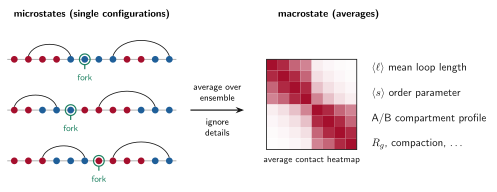
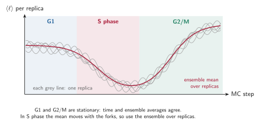

Microstates, macrostates and ensembles¶
Statistical physics separates the detailed description of a system from the averaged description that we actually compare with experiments. This page explains the vocabulary and how it maps onto RepliSage.
Microstate¶
A microstate is a complete specification of the system at one instant. In RepliSage, a microstate is the configuration
together with the state of replication \(f_{\text{rep}}(x,t)\) at that time: where every LEF leg sits, which state each bead has, and where every fork is. In the 3D part, the exact coordinates of the beads belong here too. There are astronomically many microstates, and each single one is of little use on its own, since a real cell population is a mixture of them.
Macrostate¶
A macrostate is a description by a few averaged quantities that many microstates share. The paper uses exactly this language: compartmentalisation is a macrostate that emerges from the microstates (the individual epigenetic labels). Typical macrostates in RepliSage are:
- an order parameter, such as the mean state \(\langle s \rangle\), the fraction of links that join beads of the same sign, or the mean loop length \(\langle \ell \rangle\);
- the average contact heatmap, obtained by averaging over the ensemble;
- the A/B compartment profile, from the mean epigenetic state of each bead;
- structural summaries such as the radius of gyration \(R_g\).
Many different microstates give the same macrostate. For example, two different arrangements of LEFs can have the same mean loop length.

Beads are coloured by their state \(s_k\) (red for \(s_k>0\), blue for \(s_k<0\)), arcs are LEFs \((m_i, n_i)\) and the green ring marks the bead where a replication fork sits.
Ensembles¶
An ensemble is the collection of microstates we sample, here the MCMC samples from all replicas. A macrostate is an average over the ensemble, \(\langle O \rangle\), as in Monte Carlo, MCMC and Metropolis. This is why RepliSage produces many structures per phase rather than one: the experiment (for example Hi-C) is itself an average over many cells.
| Concept | In RepliSage | Example |
|---|---|---|
| Microstate | One sampled configuration | positions of LEFs, epigenetic states, forks, bead coordinates |
| Observable \(O(\mathcal{S})\) | A function of a microstate | loop length of this configuration |
| Ensemble | All samples from all replicas | thousands of structures |
| Macrostate | Average of observables | \(\langle \ell\rangle\), \(\langle s\rangle\), the average heatmap |
Equilibrium and S phase¶
In G1 and G2/M the rules do not change, so the ensemble is stationary and macrostates settle to constant values. In S phase the forks keep changing the rules, so the macrostates move with time: the mean loop length drops, and the average epigenetic state shifts as forks pass. The relevant averaging is over replicas at each time, not over time.

This is the main reason why RepliSage reports phase-wise means and uses several replicas (--n-replicas): see Analysis for how the report computes them, and Known limitations for what this does not capture.